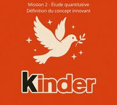
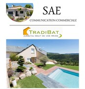
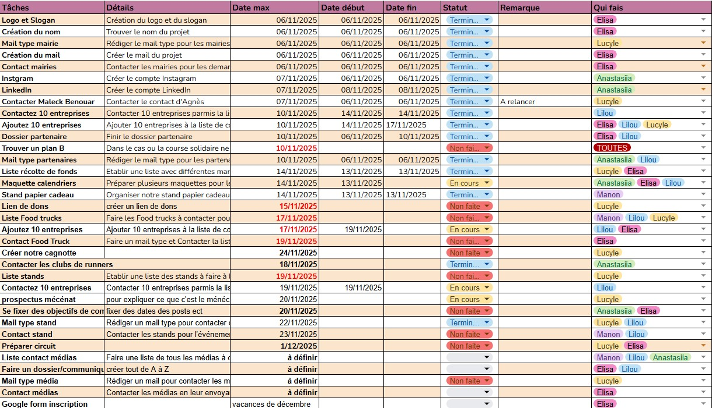
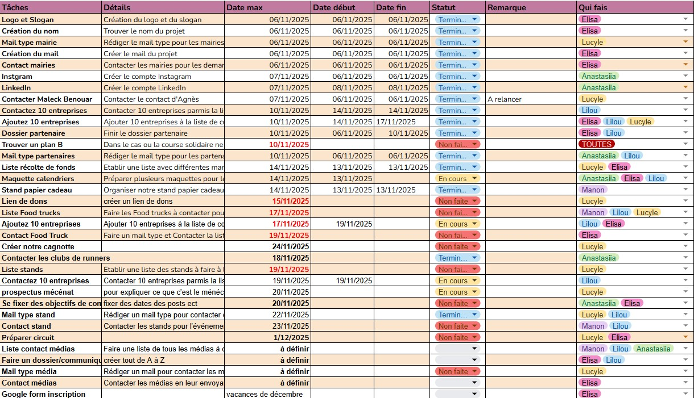

Galerie de projets
Mes Situations d'Apprentissage et d'Evaluation
Ci-dessous, vous trouverez plusieurs SAE que j’ai réalisées au cours de ces deux dernières années.
Une SAE est un projet de groupe où l’on doit appliquer le cours à une situation réelle.
Cela nous aide à mieux comprendre la matière et, en même temps, à nous professionnaliser, car nous apprenons à travailler en équipe sur un projet concret.
Pour découvrir chacun de ces projets, il vous suffit de cliquer sur les images.
Left & Right
 Pour commencer, voici le dossier de la SAE Marketing du second semestre de l’année dernière. Nous devions poursuivre le travail du S1, qui consistait à réaliser l’étude de marché d’une entreprise de notre choix, puis à proposer des idées d’innovations pour cette marque. De notre côté, nous avions imaginé plusieurs produits innovants, que vous pourrez découvrir en lisant le rapport. Au second semestre, l’objectif était ensuite d’identifier lequel de ces produits avait le plus de potentiel commercial, notamment grâce à des entretiens individuels et de groupe réalisés auprès de personnes de notre entourage.
A présent, voici la SAE Transverse réalisée au second semestre l'année dernière. Cette SAE était en partenariat avec un autre département de l'IUT de Montpellier, celui des Génie Biologie. Ces derniers étaient en charge de créer une bière sur le thème "accords et mets". De notre côté, nous devions créer l'identité de marque ainsi que le plan de commercialisation du produit. Notre bière était épicée et devait s'accorder avec un apéritif mexicain. Nous l'avons appelé Chilido en référence au "chili", le piment, et l'expression mexicaine "chido" qui signifie "cool". Cette SAE a été l'une des plus formatrices pour moi car il a fallu réaliser nous même les politiques de produit, prix, distribution et communication.
Ensuite, voici notre SAE communication commerciale du second semestre de l'année passée. Au cours de cette dernière, l'objectif était de réaliser un plan de communication et mesurer ses résultats pour l'entreprise que nous avions préalablement choisie au premier semestre. Dans le cadre de ce projet, nous devions déterminer un budget et choisir les médias les plus pertinents pour communiquer selon notre cible. Ainsi nous avons appris à établir un calendrier d'actions et à mesurer l'efficacité d'une campagne de communication. Cette SAE a été formatrice dans la recherche des prix pour chaque médias ainsi que dans l'organisation des publicités selon chaque période de l'année.
Enfin, voici la SAE la plus récente que j'ai effectué. Celle-ci entrait dans le cadre du pilotage commercial d'une organisation : nous étions en compétition avec six autres entreprises sur un même marché, et nous devions chaque année, de 2024 à 2033, prendre différentes décisions de gestion. Chaque entreprise devait choisir sa stratégie et son positionnement, nous, nous avons fait le choix de baser notre stratégie sur la qualité et l’innovation. Cette SAE a été celle que j'ai préféré réaliser car ce fut la plus concrète de toutes dans le sens où chacune de nos décisions impactait notre position sur le marché et c'est ce que j'ai trouvé le plus stimulant.
Travaux divers
Ci-dessous, vous trouverez plusieurs travaux que j'ai réalisés au cours de ma formation sur différents logiciels.
Excel
Ces deux dernières années, nous avons beaucoup utlisé Excel. Aujourd'hui je maîtrise de nombreuses fonctions telles que NB.SI, EST, ESTVIDE, RECHERCHEV,RECHERCHEH, et d'autres encore. J'ai également acquis des connaissances sur le tableau croisé dynamique ainsi que sur les graphiques. Ci-dessous quelques productions que j'ai pu réaliser dans le cadre des cours d'informatique, mais aussi pour d'autres projets d'études.
 

Canva
Ces deux dernières années, j'ai réalisé la totalité de mes supports visuels sur Canva, c'est un outil facile d'utilisation qui propose une quantité infinie de modèles. Cette plateforme m'a été très utile, pour trouver de l'inspiration mais surtout pour créer de belles présentations orales ainsi que des logos, très récurrents dans ma formation. J'utilise aussi Canva pour faire des schémas plus jolis visuellement.
WEB
Cette année, nous avons appris à coder des pages HTML et à les structurer avec un code CSS. Ce site en est la preuve, en plus des productions ci-dessous qui illustrent mon évolution à travers les différents travaux que l'on a effectués.